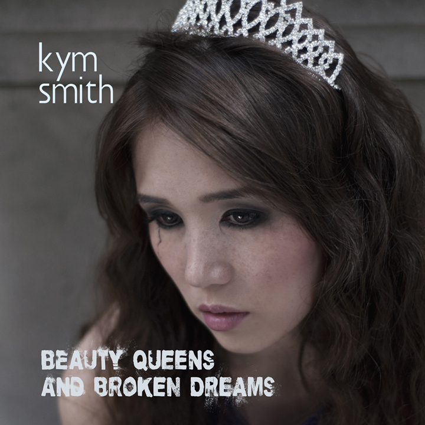

Debut album, 2013
It was my lifelong dream to record my own album. I started out as a classical musician, beginning piano at three years old and following in my mother's footsteps. As a teenager, I started listening to the radio and discovering "alternative" music. These 4 minute long songs made me feel like someone else understood me. Growing up, I was always amazed by the emotional connections I formed with these songs. This album is the culmination of years of heartache, disappointment, rejection, and self-realization. Maybe it's just wishful thinking, but I hope others will listen to my songs and feel that same connection with me.
Funded by a Kickstarter campaign, I released the album in 2013. Special thanks to the following contributors who helped make it possible:
Aaron A, Adam K, Amar G, Amar S, Ann O, Ben A, Bob O, Brandon S, Brendan C, Bruce C, Bruce G, Carly G, Cathyann R, Chris E, Chris T, Cia B, Colleen G, Danica G, Don J, Drake S Jr., Drake S Sr., Drew C, Ed H, Eddie J, Elizbeth F, Elizabeth T, Emily S, Erickson T, Erika K-W, Erin C, Francisco P, Frank V, Gaurav S, Giovanni L, Jackie F, Jackie R, Jason G, Jeff L, Jeff Y, Jeremy H, Jessica B, Joe F, Kate S, Keith B, Keith H, Kevin S, Laurie G, Kyla H, Lindsay S, Lucy S, Mahima S, Marc S, Margo A, Marianne H, Marie-Lynn P, Marisa R, Mark K, Matt S, Matt W, Max S, Mike Ba, Mike Be, Nathanial N, Nicky B, Nidia M, Peter G, Peter K, Phyllis W, Qian W, Raph K, Reji A, Rich T, Rick S, Robert C, Robert M, Ryan G, Ryan K, Scott T, Shaun P, Shawn S, Stella G, Stephanie J, Stephen W, Tabin A, Tara S, Timothy B, Timothy K, Will L